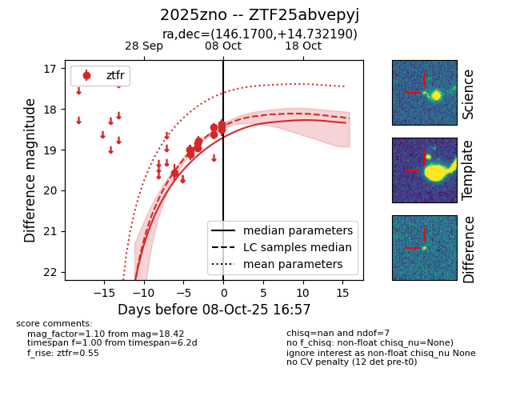
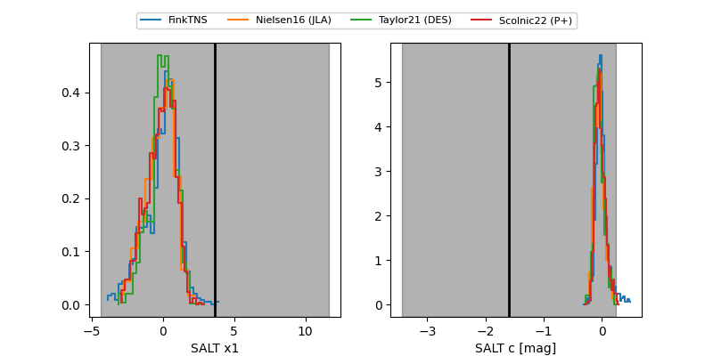

FINK: ZTF25abvepyj
Lasair: ZTF25abvepyj
ALeRCE: ZTF25abvepyj
TNS: 2025zno
YSE: 2025zno
ZTF25abvepyj (ztf,fink)
2025zno (tns,yse)
equatorial (ra, dec) = (146.1700,+14.73219)
galactic (l, b) = (219.1099,+44.94083)


last ztfr=18.42
12 ztfr detections